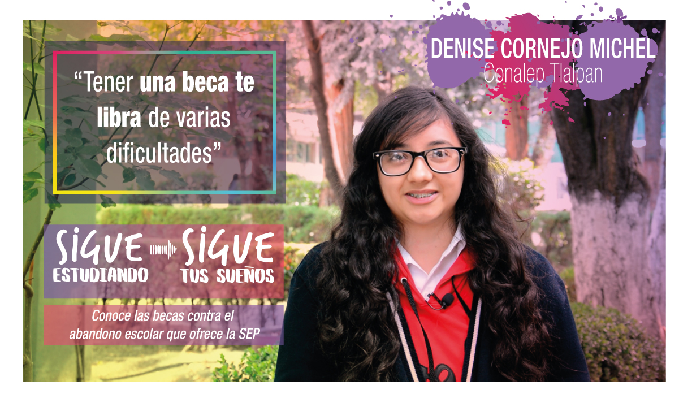

El Movimiento contra el Abandono Escolar es una estrategia integral de carácter nacional para lograr mayores índices de acceso, permanencia y conclusión exitosa de los estudios de nivel medio superior.
El Movimiento contra el Abandono Escolar es una estrategia integral de carácter nacional que involucra la participación conjunta y coordinada de autoridades educativas, federales y estatales, directivos de planteles, docentes, padres de familia, estudiantes y sociedad en general, para lograr mayores índices de acceso, permanencia y conclusión exitosa de los estudios de nivel medio superior. Desde la Subsecretaría de Educación Media Superior y en consulta con las autoridades estatales hemos construido un primer conjunto de herramientas para apoyar el trabajo en los planteles y así evitar el abandono escolar.
Muchos estudiantes abandonan sus estudios de bachillerato por falta de recursos económicos, por ello, la Secretaría de Educación Pública pone a su disposición la Beca “Contra el abandono escolar”, con el propósito de apoyarlos en la continuidad de su trayecto educativo.
Desde el primer ciclo de operación de esta beca (2013-2014) a la fecha (2016-2017) se han otorgado alrededor de 951 mil becas, lo que ha permitido que cada vez más alumnos continúen sus estudios de educación media superior.
En virtud de que 60 por ciento de las y los estudiantes que abandonan sus estudios de bachillerato lo hacen en el primer año y, sobre todo, en los primeros tres meses, la convocatoria para esta beca es permanente y los recursos que otorga permiten a los beneficiarios cubrir requerimientos básicos. El monto de esta beca oscila entre 650 y 875 pesos, dependiendo del grado escolar y sexo de las y los estudiantes.
CAUSAS DEL ABANDONO ESCOLAR CONSECUENCIA TALLERES PREVENIR EL ABANDONO EL PAPEL DE LA FAMILIA APOYO DISPONIBLE